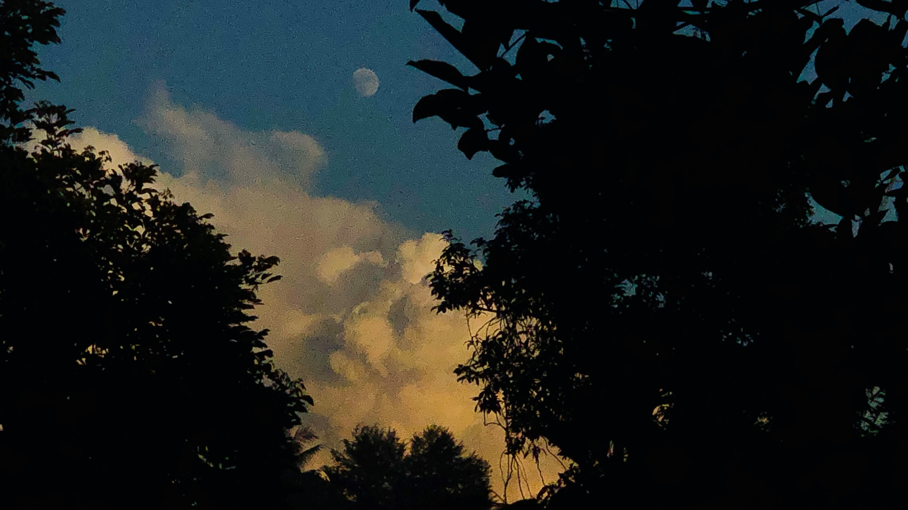
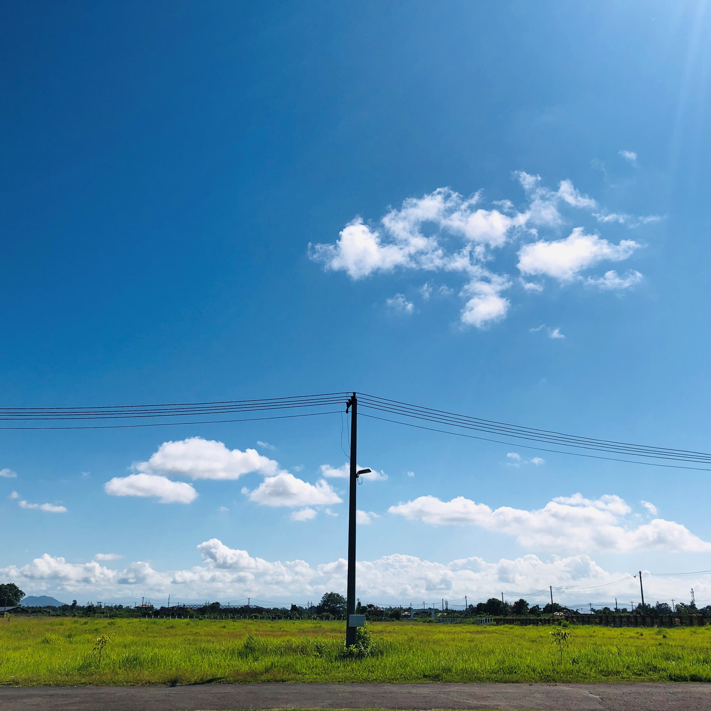

Home
Blog Post
Contact
About
Welcome to my Testing Website
ဟုတ်ကဲ့ ကျွန်တော်ကတော့ မမနဲ့ ရေပါပဲ၊ ထမင်းတောင် မပါတော့ဖူး -_-
Photo Collections

ဒီကောင်လေးကတော့ ရုံးဆင်းချိန် အပေါ်ထပ်ကနေ တခါတရံမှ မြင်ရလေ့ရှိတဲ့ ညနေခင်းကို ရိုက်ဖြစ်ထားတာ၊ ဓာတ်ပုံရိုက်ရတာတော့ ဝါသနာပါပါတယ်၊ ဒါမဲ့ ဓါတ်ပုံတော့ သိပ် မရိုက်ခံချင်ဖူး..

ဒီရဲ့ ရှုခင်း ရိုက်ထားတာ ကျွန်တော်ကိုယ်တိုင် သိပ်တော့ မကြိုက်ဖူး၊ ရိုက်ထားတာ သိပ်မလှလို့ရယ် ခံစားချက် အပြည့်မရတာရယ်၊ ဘာဖြစ်လို့လဲ ဆိုရင် View လေးက တကယ်ပဲ အပြင်မှာပိုကြည့်လို့ကောင်းတယ် စိတ်ရှင်းတယ်၊ ပြီးတော့ ရင်ထဲကြည်လင် အေးမြစေတယ်။
ဒီပုံနဲ့ လိုက်အောင် ပြောရမယ်ဆိုရင်၊ လွန်ခဲ့တဲ့ ရက်က Source တစ်ခုခုကနေ ကိုယ်ရေးထားတဲ့ Code ကို domain တစ်ခုရှိရုံနဲ့ Official Websiste ကို Host လုပ်လို့ရတယ်ဆိုတော့ ပျော်တာပေါ့ ကိုယ့်မှာ အရင်က ဝယ်ထားတာလဲ ရှိတယ်ဆိုတော့ ပြန်စမ်းကြည့်မယ်ပေါ့။ အဲ့လိုနဲ့ပဲ Friday သီတင်းကျွတ် ပြီးတာနဲ့ အိမ်ရောက်တာနဲ့ တံခါးပိတ် လပ်တော့ပ် ကောက်ကိုင်၊ ဆယ် စုနှစ်က Code တွေ ပြန်ဖတ်၊ ပြန်လေ့လာရင်းနဲ့ Design တို့ Code က အချိန်အရမ်းယူရတယ်ဆိုတော့ အရင်ဆုံး Official Web အရင် Host ကြည့်မယ်၊ ဘယ်လို အလုပ်လုပ်လဲပေါ့လေ။ အဲ့ကနေစတာပဲ အရင်က Z.com မှာ Domain ဝယ်တယ်၊ Web နဲ့ Email Hosting ဝယ်တယ်၊ ပိုက်ဆံ သိပ် မတတ်နိုင်လို့ Gb တော့ နဲနဲပဲ ဝယ်တာပါ။ ဒါပေမဲ့ ကိုယ်ကလဲ Z.com မှာ https DNS တို့ support ပေးမယ်ပေါ့ သူတို့လဲ ရေးထားပါတယ်။ သို့သော်.... သို့သော်.... အဲ့ဒီ အဲ့ဒီ ဒေါ့မ သားလေး Z.com မှ Support ဖြစ်ဖို့တောင် ပြန်ဝယ်သုံးရမယ် အနေအထားဖြစ်နေတယ်။ အခုတော့ ဂစ်ကနေ လှမ်းတင်ကြည့်ရတာပေါ့။ ဆိုတော့ အဲ့ဒီရဲ့ မုဒ်လေးပေါ့ကွယ်။
Menu & Other Tab still Left!
They will be not working if you are about to click above TABS